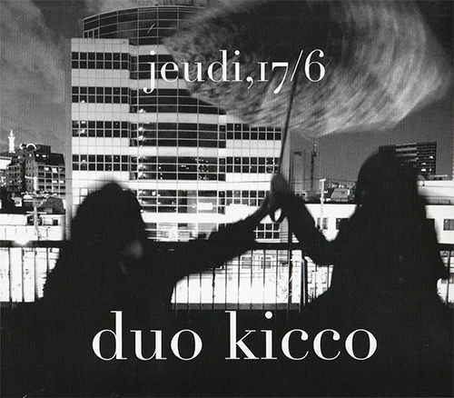
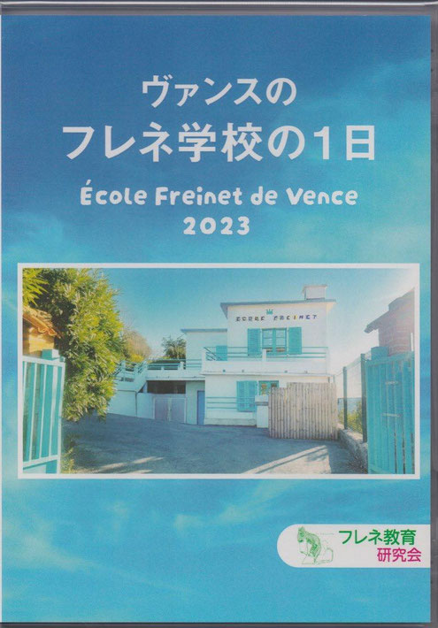
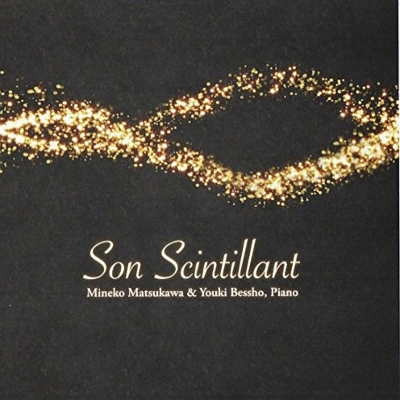
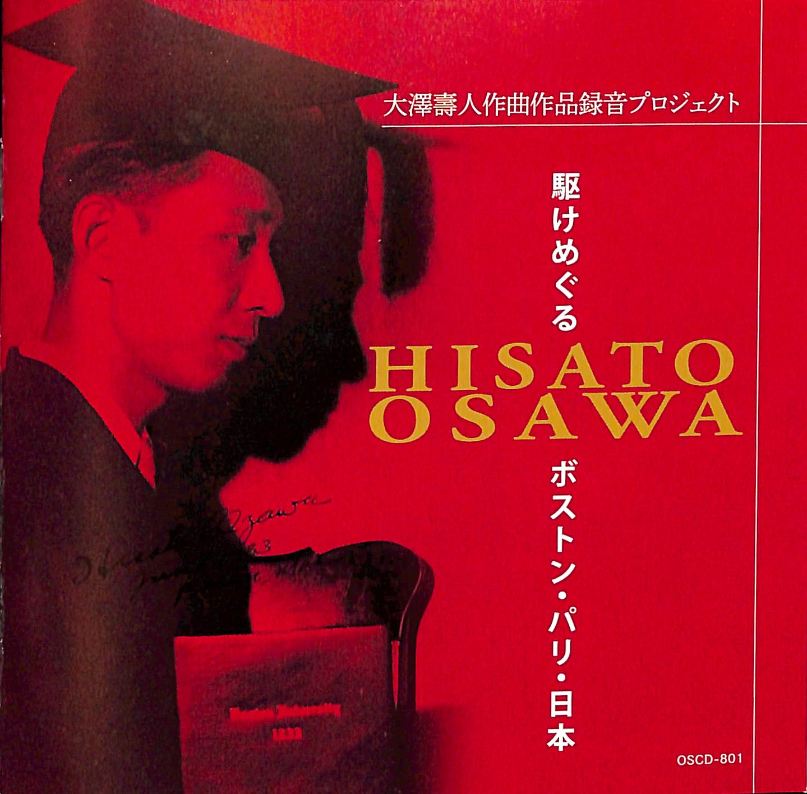

Works

jeudi, 17/6
CDアルバム／duo kicco（クラリネット：高橋由有子）
16歳の時から切磋琢磨し、今では一緒に踏み外してくれる仲間である高橋由有子（クラリネット）と2012年にduo kiccoを結成。アルバム“jeudi,17/6”は、満たされているはずの日常の中、まだ見えない何かを探す主人公のとある6月17日の木曜日を描く。ベルギーの作曲家Michel Lysightの作品が聴きどころの一つ。写真・デザインは、桶屋智秋氏（studio okeya）による。
- Petite pièce pour clarinette et piano（C. Debussy）
- Pièce en forme de habanera（M. Ravel）
- Menuet sur le nom d’Haydn（M. Ravel）
- Trois Croquis pour clarinette et piano（M. Lysight）
- Gymnopédie No.1／Gnossienne No.1（E. Satie）
- Sonate pour clarinette et piano（F. Poulenc）
- XVème Improvisation « Hommage à Edith Piaf »（F. Poulenc）

DVD『ヴァンスのフレネ学校の1日』
教育DVD（フレネ教育研究会・2023）／制作
フランス・ヴァンスにあるフレネ学校（École Freinet de Vence）の一日をとらえたドキュメンタリー。2023年制作。フレネ教育研究会の公式DVDで、別所ユウキが制作に携わった。
フレネ教育研究会にて頒布。ネットショップで購入

Son Scintillant
CDアルバム／ピアニスト松川峰子との共作
同じ大学で学び、「大澤壽人プロジェクト」を通じて親交を深めたピアニスト松川峰子との共作アルバム。それぞれの独奏と連弾を織り交ぜ、大澤壽人、ラヴェル、ピアソラ、スクリャービンと異色の組み合わせで煌く作品の数々を集めた1枚。“Son Scintillant”はフランス語で「輝く音」。大澤壽人世界初録音作品を含む。

CDは演奏会会場にて頒布しています。お問い合わせは Contact よりお願いいたします。